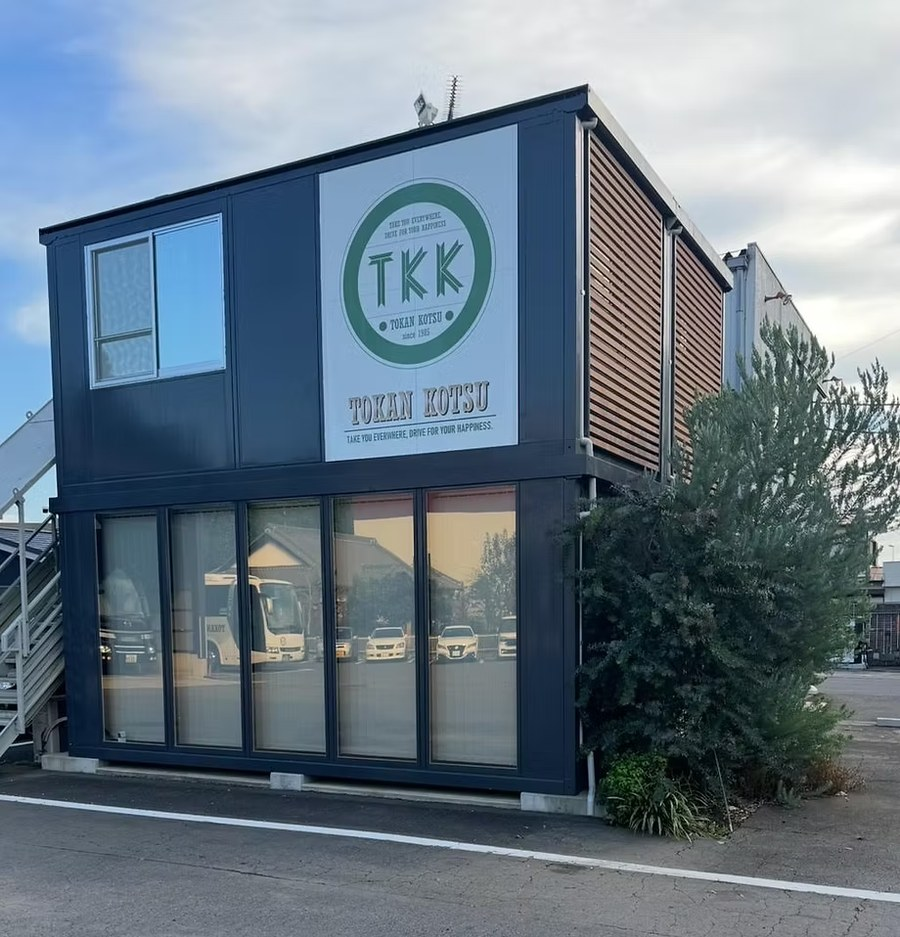

Since 198540年の歩み
「移動にプラス。価値のある移動で、生活を豊かにする。」
1985年、成田の地で歩みを始めた東関交通。以来40年、この想いを胸に走り続けてきました。貸切バスを軸に、旅行・タクシー・ハイヤー、そして太陽光発電へ——時代に合わせて事業を広げながら、変わらず大切にしてきたのは「ドライバー一人ひとりが届ける、質の高いサービス」でした。
エグゼクティブクラス車両やコンシェルジュサービスなど、他社にはない挑戦を支えてきたのは、現場のドライバーの誇りと工夫です。だからこそ私たちはドライバーを最大の資産と考え、免許取得の全額補助や働きやすい環境づくりに力を注いできました。次の40年も、あなたと一緒につくっていきたい。
- 1985年、成田で創業。設立40年の老舗バス・タクシー会社
- 貸切バス・旅行・タクシー・ハイヤー・太陽光発電へ多角化
- 貸切バス事業者「安全性評価認定」を取得
- 国土交通省「働きやすい職場認証制度」を認証
- 一般社団法人 女性バス運転手協会に加盟（女性・シニアも活躍）
- ドライバー継続率90%以上（業界平均67.5%）